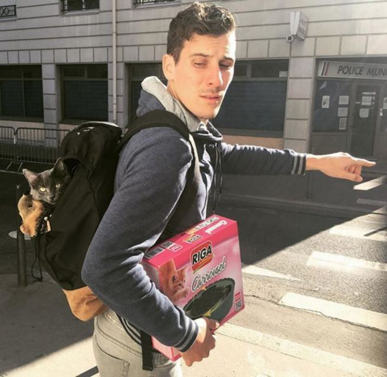
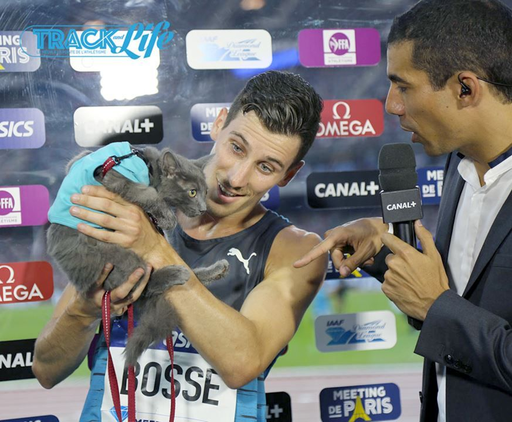
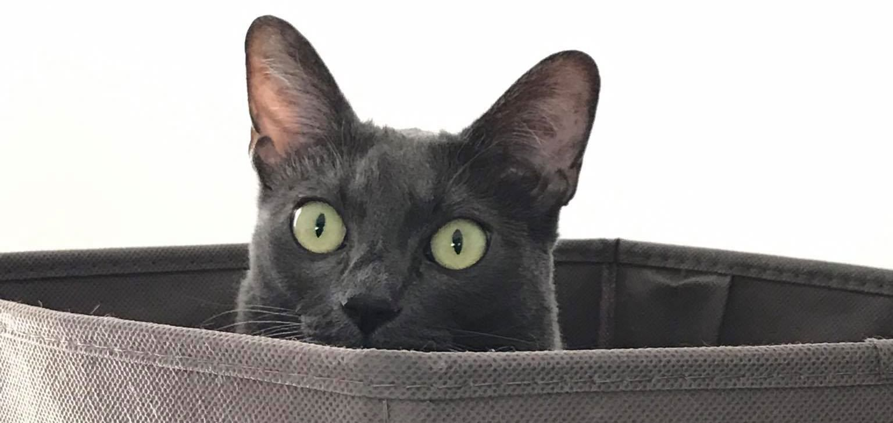
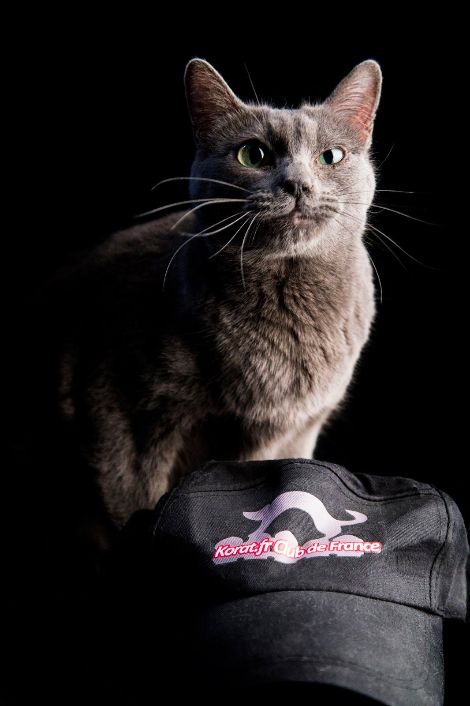
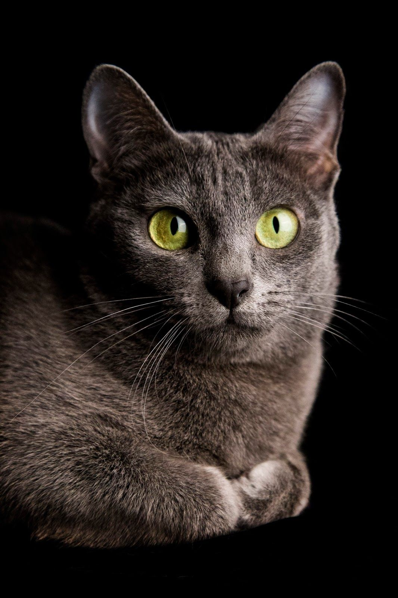
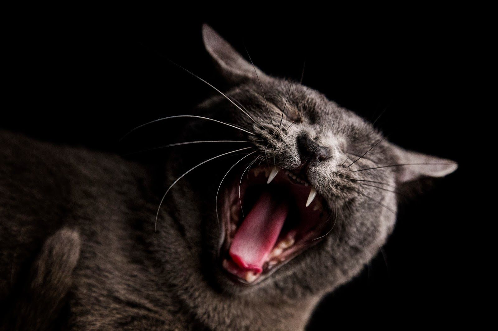
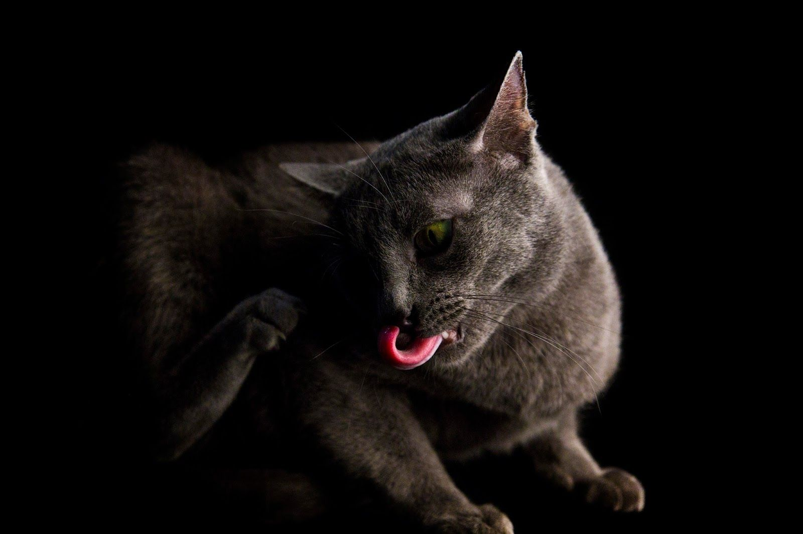
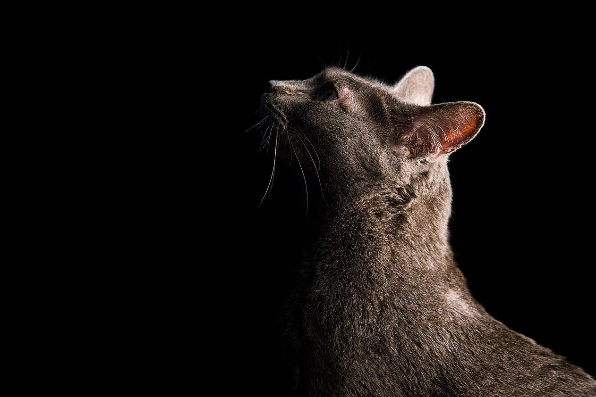
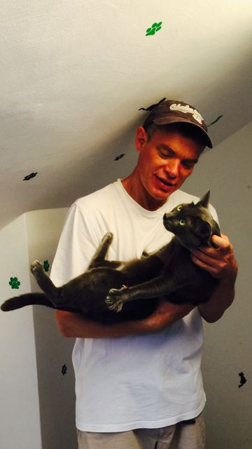
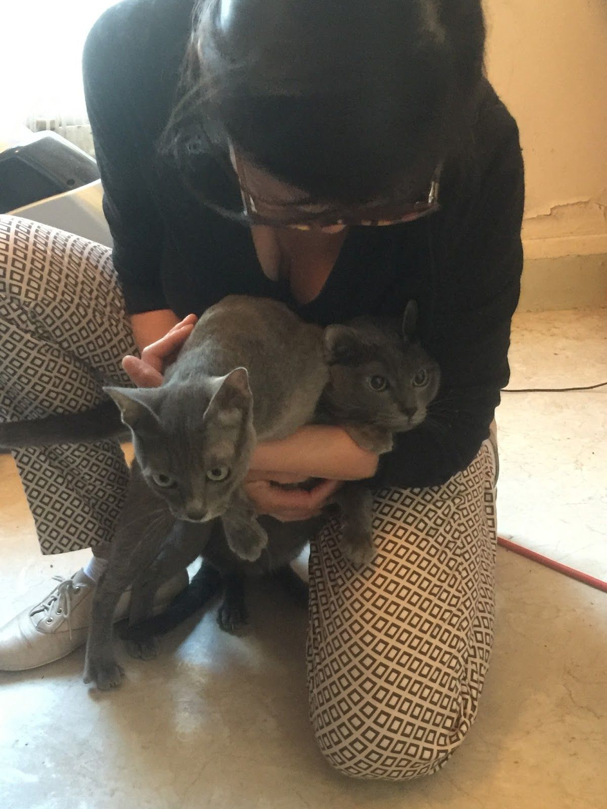

08 août 2017
Mea culpa de si peu écrire sur ce blog ! J'offre mon temps félin à mes korats et leurs propriétaires plutôt qu'à l'ordinateur, les pros mordus de concours s'en chargent… Et surtout à garder de bons contacts, cela fait de plus en plus de monde depuis quelques années, entre les anciens, les nouveaux, le bouche-à-oreille…
Qui veut adopter un korat chaton (ou adultes d'ailleurs actuellement) sait bien me trouver, parfois à l'aide de persévérance et d'attente il est vrai et j'arrête là mon excursus sur les vertus des longs préliminaires… Pour reprendre la plume internet en ce 8 Août journée internationale du chat créé en 2002 à l'initiative du Fonds international pour la protection des animaux et créer ce long article…
Pierre-Ambroise BOSSE champion du monde 800 mètres aujourd'hui !


La boule de poils grise de Pierre se nomme Rabs.

Inox n'arrête pas de faire parler de lui !

De nouvelles aventures ont été publiées. Clic ici pour voir la page évoquant la naissance du conte qui n'en finit pas de se poursuivre, accéder aux liens des livres…
3 chattes shootées par une pro…
Trois chattes d'AmourKorat shootées, l'une d'un an (bluepoint), et deux de deux et cinq ans (à l'époque). C'était il y a deux ans, La maman de cinq ans ci-dessous elle était toute pleine. Les photos sont sur le blog de la portée pour partager entre adoptants de la fratrie. Le blog n'est pas public à la demande d'un autre adoptant VIP. Cependant quelques photos sont sur le site pro de la photographe que je recommande amicalement, Ludmilla Drouot.


Cette jeune adulte bluepoint, korat avec pedigree LOOF, est à adopter(08/2017), j'en profite pour passer le message…




Vacances pour chats
En cette période de vacances, quelques photos de chats gardés pour dépanner… Celui ci-dessous ronronne à l'extrême avec ce geste répétitif d'étirement des griffes…

Les deux ci-dessous en garde pour une première saillie… 3 semaines de korat lovers, le temps de faire connaissance, il n'y a pas que les humains qui ont droit aux vacances ! Il faut avouer un peu de luminothérapie pour réactiver les chaleurs sous les sunlights des tropiques, quelques succulentes recettes à manger pour la libido, quelques jeux pour couples, un ou deux trucs appris des éleveurs thaïlandais durant mon mois de visite, quelques astuces de vétérinaires, et surtout un peu de poudre de perlimpinpin secrète…

1er jour de rencontre : pas du tout le coup de foudre !

Après 3 semaines (fin le week-end dernier, la photo date de 4 jours !) ils se sont trouvés un peu plus d'affinités et font couche commune ! Suite dans deux mois où je récupère chacun pour trois mois : peu avant la mise bas puis engendrer des chatons d'exceptions…
Le mâle était celui que j'avais emmené et qui s'était distingué au show du Louvre pour Noël 2014 histoire de le remettre… (voir les articles du Korat Club de France).


Korats dans un film !
Film non encore sortie mais voici deux photos d'un tournage fin 2016 avec deux chatons d'Amour Korat.